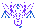
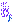
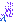
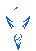

The pieces behind the nightmare.
The approved action, now testing independent native-sprite parts. Enable the native preview to compare it with the schematic. This is a feasibility proof, not final art.
Adventure head, hands and torso; opaque cloth interior reconstructed in the renderer. No generated images or flat-image warping.
Inspect source pieces and limitations




The source sprite makes black transparent. Full opaque cloth panels are reconstructed for this motion test, not claimed as original game pixels. Larger painted layers would be a separate art pass. Source rectangles, credit and hashes.
Sound is off until enabled. Step or scrub silently; Resume plays from that beat.
Sound off
Nightmare
Kirby’s Adventure · 1993
A character sound in the dark
Character and identity stay concealedBanner composition · not final art
Travelling lights · result order
Shared opening
The pull locks
- Camera
- Music
- Sound
Same results. Same order.
This list is an authored review fixture, not a paid or random draw. Production NEW / duplicate / Echo details will come from the committed receipt.
What we’re deciding
Nightmare’s cloak closes from both sides. His face rises alone; hands return with the cloth and continue into the close-up. In the ten-pull, Dedede gets a hammer beat and falling Waddle Dees, then a shorter pullback.
Each light is one result
Same Fountain / Warp Star route, but every light now upgrades to its own fixed result’s tier: R blue, SR silver, SSR gold, UR rainbow. No sorting or rerolling.
What comes after this proof
Review whether native pixels plus reconstructed cloth are the right art route, then refine the actual layers before production integration. Banner title music differs from the pull theme; Dedede and Nightmare use Adventure boss tracks. No production pools, currency or saves change.
Audio and sprite credits
Adventure (1993): title theme, Fountain of Dreams, Boss! (Dedede) and Nightmare, Hirokazu Ando / Jun Ishikawa, HAL Laboratory / Nintendo. Recordings: Zophar’s Domain. Dedede laugh: Super Smash Bros. Ultimate, Nintendo / HAL Laboratory, Sounds Resource. Waddle Dee and Nightmare sprites: Adventure, Drshnaps (Jermungandr) / HAL Laboratory, Spriters Resource. Nightmare’s omen and cloth / magic sounds are authored effects, not a voice clip.
Music sources and hashes · Native call provenance · Sprite provenance